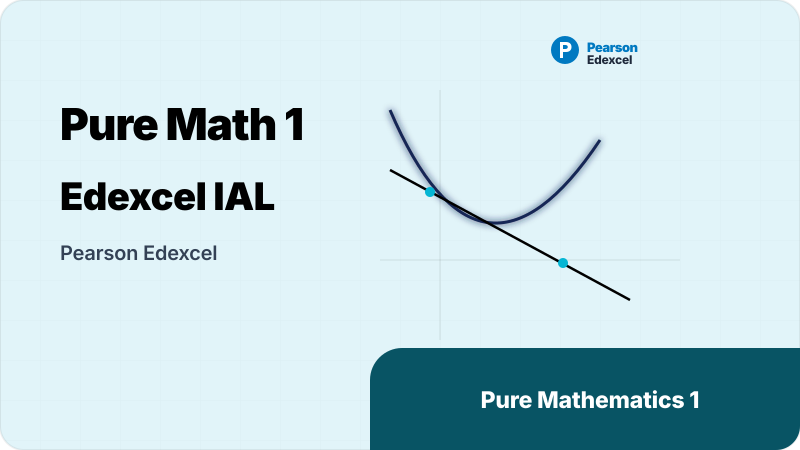
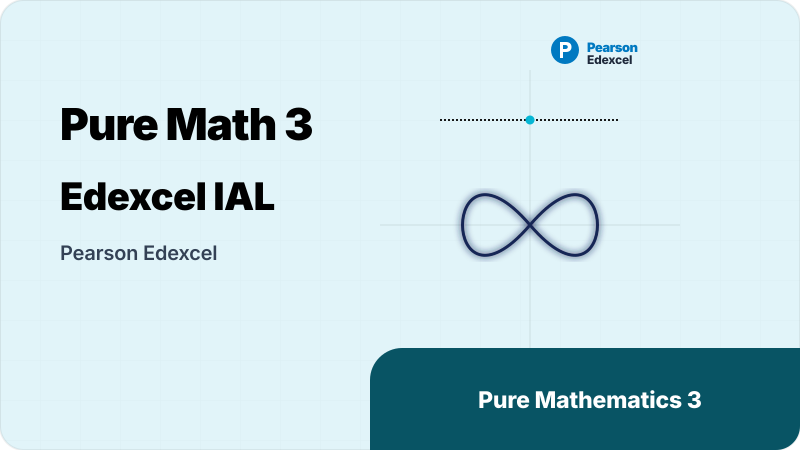
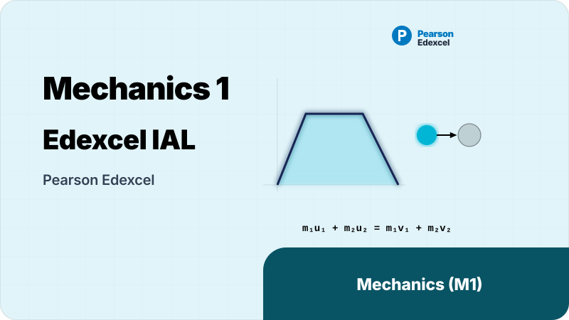
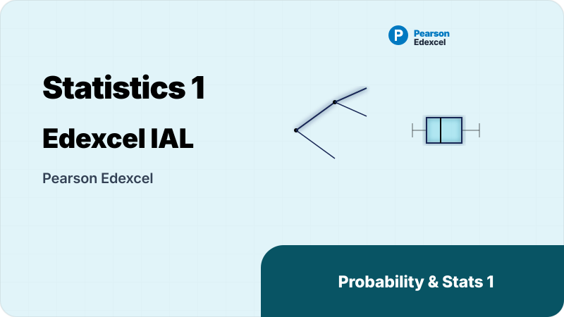
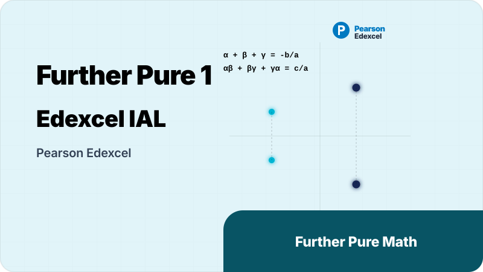

Edexcel Mathematics Overview
Pearson Edexcel International Advanced Level (IAL) Mathematics Portal
Welcome, students! Pearson Edexcel International Advanced Level (IAL) Mathematics is a flexible modular curriculum. NKK-Education Hub provides a structured library of core study notes, topical worksheets, and actual exam past papers organized by individual exam units to help you optimize your learning and achieve an A* grade.
1. Course Introduction
Pearson Edexcel International Advanced Level in Mathematics follows a modular design, enabling candidates to take examinations throughout the course. The qualification is built from different units, allowing students to specialize in areas of Pure Mathematics, Mechanics, Statistics, or Decision Mathematics.
Assessment Outline
To obtain an International Advanced Level (IAL) in Mathematics, candidates must Cash-In six modules, including the compulsory Pure Mathematics units (P1, P2, P3, P4) plus two optional application units.
| Exam Module | Syllabus Component | Format & Duration | Marks | IAL Weighting |
|---|---|---|---|---|
| Pure Mathematics 1 (P1) | Algebra, coordinate geometry, trig, calculus | Written exam — 1 hour 30 minutes | 75 marks | 16.7% (33.3% of IAS) |
| Pure Mathematics 2 (P2) | Proof, sequences, exponentials, logs, circle | Written exam — 1 hour 30 minutes | 75 marks | 16.7% (33.3% of IAS) |
| Pure Mathematics 3 (P3) | Inverse trig, algebraic methods, advanced calculus | Written exam — 1 hour 30 minutes | 75 marks | 16.7% (16.7% of IAL) |
| Pure Mathematics 4 (P4) | Parametrics, partial fractions, vectors, integration | Written exam — 1 hour 30 minutes | 75 marks | 16.7% (16.7% of IAL) |
| Optional Unit 1 (e.g., S1 / M1) | Probability and statistics or basic mechanics | Written exam — 1 hour 30 minutes | 75 marks | 16.7% |
| Optional Unit 2 (e.g., S2 / M2 / D1) | Advanced statistics, dynamics, or decision math | Written exam — 1 hour 30 minutes | 75 marks | 16.7% |
Cash-In and Grading Criteria
- IAS Level Award: Compiled from 3 units (P1, P2 + one application unit like S1 or M1). The maximum raw marks are converted to a Uniform Mark Scale (UMS) maximum of 300 UMS.
- IAL Level Award: Compiled from 6 units (P1, P2, P3, P4 + two application units) with a maximum of 600 UMS marks.
- A* Criteria: To achieve an A* grade overall, candidates must score at least 480 UMS marks in total across the 6 units, and score at least 180 out of 200 UMS marks on P3 and P4 combined.
Syllabus Structure
The core units of the Edexcel IAL Mathematics curriculum comprise the following detailed topics:
1. Algebra and functions
1.1 Laws of indices.
1.2 Surds.
1.3 Quadratic functions and graphs.
1.4 Discriminant.
1.5 Completing the square & solving quadratics.
1.6 Simultaneous equations.
1.7 Interpret inequalities graphically.
1.8 Represent inequalities graphically.
1.9 Solutions of inequalities.
1.10 Algebraic manipulation of polynomials.
1.11 Cubic and reciprocal functions.
1.12 Graph transformations.
2. Coordinate geometry in the (x, y) plane
2.1 Equation of a straight line.
2.2 Parallel and perpendicular lines.
3. Trigonometry
3.1 Sine rule, cosine rule and triangle area.
3.2 Radian measure.
3.3 Sine, cosine and tangent functions.
4. Differentiation
4.1 The derivative and rates of change.
4.2 Differentiation of polynomials.
4.3 Gradients, tangents and normals.
5. Integration
5.1 Indefinite integration.
5.2 Integration of polynomials.
1. Proof
1.1 Structure of mathematical proof.
1.2 Proof by exhaustion.
1.3 Disproof by counter example.
2. Algebra and functions
2.1 Algebraic division, Factor and Remainder Theorems.
3. Coordinate geometry in the (x, y) plane
3.1 Coordinate geometry of the circle.
4. Sequences and series
4.1 Sequences.
4.2 Arithmetic sequences and series.
4.3 Increasing, decreasing and periodic sequences.
4.4 Geometric sequences and series.
4.5 Binomial expansion.
5. Exponentials and logarithms
5.1 Exponential functions and graphs.
5.2 Laws of logarithms.
5.3 Solving exponential equations.
6. Trigonometry
6.1 Trigonometric identities.
6.2 Solving trigonometric equations.
7. Differentiation
7.1 Maxima, minima and stationary points.
8. Integration
8.1 Definite integrals.
8.2 Area under a curve.
8.3 Trapezium rule.
1. Algebra and functions
1.1 Simplification of rational expressions.
1.2 Functions and inverse functions.
1.3 Modulus function.
1.4 Combinations of transformations.
2. Trigonometry
2.1 Secant, cosecant, cotangent and inverse trig functions.
2.2 Pythagorean identities.
2.3 Addition and double angle formulae.
3. Exponential and logarithms
3.1 The exponential function.
3.2 The natural logarithm function.
3.3 Logarithmic graphs and relationships.
4. Differentiation
4.1 Differentiating exponential, log and trig functions.
4.2 Product, quotient and chain rules.
4.3 Differentiating inverse relations.
4.4 Exponential growth and decay.
5. Integration
5.1 Integrating standard functions.
5.2 Integration by recognition.
6. Numerical methods
6.1 Location of roots.
6.2 Simple iterative methods.
1. Proof
1.1 Proof by contradiction.
2. Algebra and functions
2.1 Partial fractions.
3. Coordinate geometry in the (x, y) plane
3.1 Parametric equations.
4. Binomial expansion
4.1 Binomial series for rational powers.
5. Differentiation
5.1 Implicit and parametric differentiation.
5.2 Simple differential equations.
6. Integration
6.1 Volume of revolution.
6.2 Integration by substitution and parts.
6.3 Integration using partial fractions.
6.4 Solving first order differential equations.
6.5 Area under parametric curves.
7. Vectors
7.1 2D and 3D vectors.
7.2 Magnitude of a vector.
7.3 Vector algebra.
7.4 Position vectors.
7.5 Distance between two points.
7.6 Vector equations of lines.
7.7 Scalar product and angles between lines.
1. Mathematical models in mechanics
1.1 Basic ideas of mathematical modelling.
2. Vectors in mechanics
2.1 Magnitude and direction.
2.2 Applying vectors to kinematics and forces.
3. Kinematics of a particle moving in a straight line
3.1 Constant acceleration.
4. Dynamics of a particle moving in a straight line or plane
4.1 Newton’s laws of motion.
4.2 Connected particles.
4.3 Momentum, impulse and conservation of momentum.
4.4 Coefficient of friction.
5. Statics of a particle
5.1 Resolution of forces.
5.2 Equilibrium of a particle.
5.3 Friction in equilibrium.
6. Moments
6.1 Moment of a force.
1. Kinematics of a particle moving in a straight line or plane
1.1 Motion under gravity.
1.2 Projectiles.
1.3 Variable acceleration.
2. Centres of mass
2.1 Centre of mass of discrete distributions.
2.2 Centre of mass of plane figures.
2.3 Equilibrium of a plane lamina.
3. Work and energy
3.1 Kinetic/potential energy, work, power and conservation.
4. Collisions
4.1 Impulse and conservation of momentum in vectors.
4.2 Direct impact and restitution.
5. Statics of rigid bodies
5.1 Moment of a force.
5.2 Equilibrium of rigid bodies.
1. Mathematical models in probability and statistics
1.1 Basic ideas of mathematical modelling.
2. Representation and summary of data
2.1 Histograms, stem/leaf diagrams, box plots.
2.2 Measures of location.
2.3 Measures of dispersion.
2.4 Skewness and outliers.
3. Probability
3.1 Elementary and conditional probability.
3.2 Probability rules.
3.3 Independence.
3.4 Sum and product laws.
4. Correlation and regression
4.1 Scatter diagrams and linear regression.
4.2 Explanatory and response variables.
4.3 Product moment correlation coefficient.
5. Discrete random variables
5.1 Concept of a discrete random variable.
5.2 Probability and cumulative distribution functions.
5.3 Mean and variance.
5.4 Discrete uniform distribution.
6. The Normal distribution
6.1 The Normal distribution and cumulative tables.
1. The Binomial and Poisson distributions
1.1 Binomial and Poisson distributions.
1.2 Mean and variance.
1.3 Poisson approximation to binomial.
2. Continuous random variables
2.1 Concept of a continuous random variable.
2.2 PDF and CDF.
2.3 Relationship between density and distribution.
2.4 Mean and variance.
2.5 Mode, median and quartiles.
3. Continuous distributions
3.1 Continuous uniform distribution.
3.2 Normal approximations.
4. Hypothesis tests
4.1 Population, census and sample.
4.2 Statistic and sampling distribution.
4.3 Null and alternative hypotheses.
4.4 Critical region.
4.5 One-tailed and two-tailed tests.
4.6 Tests for binomial and Poisson distributions.
Official Academic Resources
Download official specifications and syllabus materials:
Choose Your Unit for Revision
Select the specific exam unit you are preparing for to access notes, formula summaries, and past papers:

Pure Mathematics 1 & 2 (P1-P2)
Pure Mathematics 1 & 2
- P1 Focus: Quadratics, graphs, coordinate geometry, basic differentiation and integration.
- P2 Focus: Geometric series, logarithms, trigonometry, trapezium rule, circle coordinate geometry.
- Explore P1 → | Explore P2 →

Pure Mathematics 3 & 4 (P3-P4)
Pure Mathematics 3 & 4
- P3 Focus: Modulus functions, numerical root-finding, trigonometry identities, product/quotient/chain rules.
- P4 Focus: Parametric coordinates, vectors, integration by parts/substitution, partial fractions.
- Explore P3 → | Explore P4 →

Mechanics 1 & 2 (M1-M2)
Mechanics Units 1 & 2
- M1 Focus: Constant acceleration, Newton’s laws of motion, connected particles, friction, moments.
- M2 Focus: Projectile motion, centres of mass, work-energy-power, direct impact collisions.
- Explore M1 → | Explore M2 →

Statistics 1 & 2 (S1-S2)
Probability & Statistics Units 1 & 2
- S1 Focus: Histograms, dispersion, conditional probability, correlation coefficient, Normal distribution.
- S2 Focus: Binomial and Poisson distributions, continuous uniform distribution, hypothesis testing.
- Explore S1 → | Explore S2 →

Further Pure Mathematics (FP1-FP2)
Further Mathematics Units
- Advanced theoretical mathematics designed for students preparing for undergraduate mathematics, physics, and computer science degrees.
- Explore Further Math →
2. Past Papers
Search and filter actual past exam papers. Use the quick filter bar to locate papers by year, unit module, or timezone variant:
Edexcel IAL Mathematics Past Papers Search
Loading past papers...